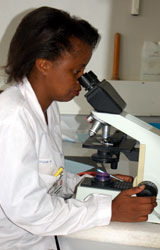

The Kingston Hospital Laboratory is the leading diagnostic laboratory service provider in the region and other than serving the hospital's needs, it offers referral services for all rare tests to other institutions in the country and Eastern Africa Region. To ensure efficiency in reports dispatch, the department uses a laboratory information system that is interfaced with all analyzers and hospital information management system (CARE 2000).
We also employ an internally well developed and longstanding quality system geared towards continual improvement strategies in the whole department. The department is sub divided into sections, specific to similar diagnostic laboratory tests.
The section has modern automation and in conjunction with best management practices, produces quality results for biopsies within 3-5 days. Quality is ensured by collaborations with The University of Siena and the Lancet Laboratory, South Africa. Cytology procedures such as pap- smears, Fine Needle Aspiration (FNA) and fluid cytology have a turn around time of 1-2 days.
The section is specialized for the diagnosis of Bacteriology, Parasitology and Tuberculosis. The Automation here includes the latest MGIT- 960 TB System and BactAlert 3D blood culture system. Due to considerable high number of results involved here, the Laboratory information system has come in handy in ensuring timely results capture for both internal and external clients. Some of the specialized strengths in the section include testing in:
We are currently subscribed to the Human External Quality Control Program.
This section is fully automated, with the State of Art ‘Aeroset' Biochemistry analyzer with capabilities of testing 2000 samples per hour and relays results to the laboratory and hospital information system interface from between 15 minutes to 1 hour duration. However, the skilled technologists must first authenticate the results for the rest of the authorized HIS users to view the results.
The Back-up system includes the Olympus and Roche biochemistry analyzers. Some of the rare tests done in house include all Immunoglobulins, Immuno electrophoresis, Complements 3 & 4, Transferrin and Lipoprotein.
This section is highly specialized performing all the immunological and other rare tests. It has a panel of over 500 tests. It is equipped with most analyzers and like in the Biochemistry section, the results are sent directly from the analyzers to the Hospital Information System. The analyzers include; Axysm Immuno analyzer, Architect Immuno analyzer, Elecys Immuno analyzer, the Vidas for hormones and TDX for drugs analysis. Some of our strength include tests that other hospitals send abroad but we run them locally within a day, these includes; Pro BNP (a cardiac marker), all types of Tumours markers for Cancer, Auto immune antibody screening with tests (CNP ANCA, ENA, Double Stranded DNA, Anti CCP & Anti Cardiolipin Antibody), Therapeutic drug monitoring, ACTH, Parathyroid hormone, DHEA (precursor for testosterone) and Procalcitonin.
The section has collaborations with leading laboratories in South Africa, United Kingdom and Italy where it refers tests as need be.
The section is responsible for blood counts and provision of safe blood for transfusion to all patients. It is equipped with four main analyzers which also relay reports directly to the information system; The Cell Dyne 3500, Cell Dyne 3700, Celltac Haematology analyzers, Fascount and the ACL Coagulation equipments.
